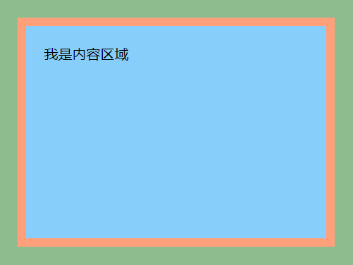
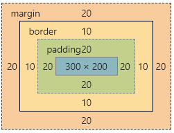
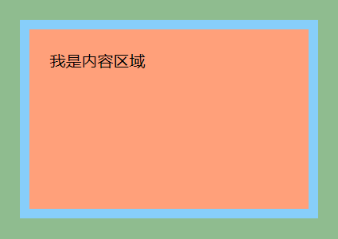
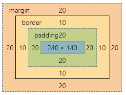

所有HTML元素可以看作盒子，在CSS中，”box model”这一术语是用来设计和布局时使用。
CSS盒模型本质上是一个盒子，封装周围的HTML元素，它包括：边距，边框，填充，和实际内容。
盒模型允许我们在其它元素和周围元素边框之间的空间放置元素。
- W3C标准盒模型
- IE盒模型
- 两种盒模型的区别
盒子模型
- Margin(外边距) - 清除边框外的区域，外边距是透明的。
- Border(边框)- 围绕在内边距和内容外的边框。
- Padding(内边距) - 清除内容周围的区域，内边距是透明的。
- Content(内容) - 盒子的内容，显示文本和图像。
W3C标准盒模型

盒子的内容区域(content) = 设置的width/height
标准盒模型的宽高
width= content + padding * 2 + border * 2
height= content + padding * 2 + border * 2
示例
1 | body{ |
效果

我们点击f12，打开调试页面

明明我们设置的是宽高为300x200的盒子，发现却是一个360x260的盒子。
盒子的宽高：
360(width) = 300(content) + 20(padding) * 2 + 10(border) * 2
260(height) = 200(content) + 20(padding) * 2 + 10(border) * 2
IE盒模型

盒子的宽高 = 设置的width/height
示例
1 | body{ |
效果

我们点击f12，打开调试页面

盒子的宽高：
300(width) = 240(content) + 20(padding) * 2 + 10(border) * 2
200(height) = 140(content) + 20(padding) * 2 + 10(border) * 2
两种盒模型的区别
- 在 标准盒子模型中，width 和 height 指的是内容区域的宽度和高度。增加内边距、边框和外边距不会影响内容区域的尺寸，但是会增加元素框的总尺寸。
- IE盒子模型中，width 和 height 指的是内容区域+border+padding的宽度和高度。
box-sizing
如果想要切换盒模型也很简单，这里需要借助css3的box-sizing属性
- box-sizing: content-box 是W3C盒模型
- box-sizing: border-box 是IE盒模型
box-sizing的默认属性是content-box